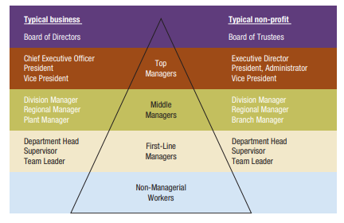

In organizations, there are different levels of management, each with specific responsibilities and roles. Let's explore these levels and what they entail,

|
Top Managers Continue Learning |
Top managers, such as CEOs, presidents, and vice presidents, are responsible for the overall performance of an organization. They focus on the external environment, long-term vision, and strategic decision-making. |
|
|
Middle Managers Continue Learning |
Middle managers oversee large departments or divisions, consisting of smaller work units. They work with top managers and coordinate with peers to develop and implement action plans to achieve organizational objectives. |
|
|
First-Line Managers Continue Learning |
First-line managers, like team leaders or supervisors, are in charge of small workgroups composed of non-managerial workers. They create the foundation for organizational performance and play a crucial role in day-to-day operations. |
Select each item to learn more.
Top managers pay special attention to the external environment, make long-term decisions, and ensure that strategies align with the organization's purpose and mission.
Middle managers coordinate and work with top managers, developing and implementing action plans to accomplish organizational goals.
First-line managers, like team leaders, lay the groundwork for organizational performance and are crucial in day-to-day operations.
Select each tab to learn more.
Team leaders play a vital role in organizations. Here are some tips for team leaders to excel in their positions.
First-line managers are the building blocks of organizational performance. Here's advice for those taking on initial managerial responsibilities.
|
MANAGEMENT SMARTS Advice for front-line managers |